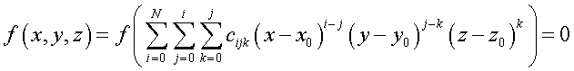
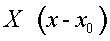
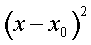
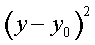
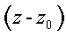
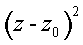

Creates a general surface defined by polynomial coefficients.
Syntax
GENERAL [ X ] [ x y z [ c c' c" ... ] ]
COEFFICIENTS Y
Z
-X
-Y
-Z
EXPLICIT
XiYjZk c [ c' c" ... ]
:
| Option | Description |
|---|---|
| X, Y, Z, -X, -Y, or -Z | axis for order-doubled polynomial |
| x y z | reference point |
| c c' c" ... | polynomial coefficients |
| COEFFICIENTS | synonym for GENERAL |
| EXPLICIT | explicit function option |
| XiYjZk | coefficient term representation |
Reference Point
As given
Surface Normal
As defined
Autolimiting
No
Remarks
- An entirely general surface may be created by directly entering a reference point and any of the up to 286 single-precision polynomial coefficients. This can be done either on the GENERAL command starting with the lowest-order coefficient, or on successive commands that begin with the coefficient of the term represented by XiYjZk, where i,j,k are integer powers. Any coefficients that are not entered are set to zero.
- In effect, all other SURFACE definition commands are shorthand for GENERAL, since ASAP saves
surface data only in this form. The surface may be written as a 10th-order
polynomial in the three Cartesian coordinates as shown in the following equation.
where (x0,y0,z0) defines the reference point of the function.
- The c entries are the
coefficients of the 286-term function defining polynomial. These polynomials are
ordered as shown in the table (numbers in the Terms column are powers):
Order Terms 0 Constant C 1 Linear X Y Z 2 Quadric X2 XY XZ Y2 YZ Z2 3 Cubic X3 X2Y X2Z XY2 XYZ XZ2 Y3 Y2Z YZ2 Z3 4 Quartic X4 X3Y X3Z X2Y2 X2YZ X2Z2 XY3 XY2Z XYZ2
XZ3 Y4 Y3Z Y2Z2 YZ3 Z4
5 th-order X5 X4Y X4Z X3Y2 X3YZ X3Z2 X2Y3 X2Y2Z X2YZ2
X2Z3 XY4 XY3Z XY2Z2 XYZ3 XZ4 Y5 Y4Z Y3Z2
Y2Z3 YZ4 Z5
6 th-order X6 X5Y X5Z X4Y2 X4YZ X4Z2 X3Y3 X3Y2Z X3YZ2
X3Z3 X2Y4 X2Y3Z X2Y2Z2 X2YZ3 X2Z4 XY5 XY4Z XY3Z2
XY2Z3 XYZ4 XZ5 Y6 Y5Z Y4Z2 Y3Z3 Y2Z4 YZ5 Z6
7 th-order X7 X6Y X6Z X5Y2 X5YZ X5Z2 X4Y3 X4Y2Z X4YZ2
X4Z3 X3Y4 X3Y3Z X3Y2Z2 X3YZ3 X3Z4 X2Y5 X2Y4Z X2Y3Z2
X2Y2Z3 X2YZ4 X2Z5 XY6 XY5Z XY4Z2 XY3Z3 XY2Z4
XYZ5 XZ6 Y7 Y6Z Y5Z2 Y4Z3 Y3Z4 Y2Z5 YZ6 Z7
8 th-order X8 ... 9 th-order X9 ... 10 th order X10 ... - In the 10th-order polynomial equation, fcn is the name of an optional macro function (intrinsic; for example, SIN or user-defined $FCN).
- The optional coordinate axis is a flag for ASAP to create a surface/function with symmetry about some plane or axis. Substituting one or two of the coordinates in the functional equation with their squares, effectively doubling the order of the polynomial, does this.
- The mathematical effect of order doubling
is:
Entry Mathematical Effect Geometrical Effect X  is replaced by 
symmetry about local x plane -X  is replaced by
is replaced by 
 is replaced by

symmetry about local x axis - The alternate EXPLICIT entry removes all Z-dependent terms from the polynomial except an implied linear z coefficient of -1 as shown in the following equation.
- This general 2D polynomial can go as high as the 20th order in X and Y.
Example
A sphere of radius 5 centered at 0,0,2 could be defined in the following ways:
GENERAL 0 0 2 -25 0 0 0 1 0 0 1 0 1
GENERAL 0 0 2; C -25; X2 1; Y2 1; Z2 1
GENERAL -Z 0 0 2; C -25; X2 1; Y2 1; Z2 1